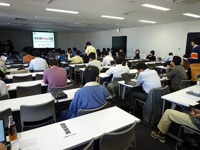
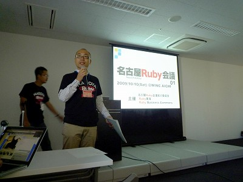
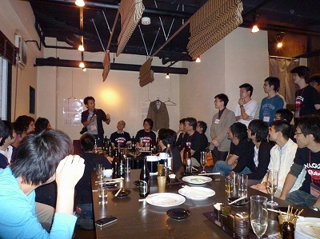

RegionalRubyKaigi レポート (09) 名古屋 Ruby 会議 01
書いた人: 豊吉隆一郎
はじめに
: 
2009 年 10 月 10 日に東海地方初の地域 Ruby 会議である名古屋 Ruby 会議 01 が開催されました。短い募集期間ながら予定人数を超える応募を頂き、今後の東海地方での Ruby でのさらなる盛り上がりを予感させるイベントとなりました。
開催概要
- 日時
- 2009/10/10 (土) 10:00 〜 18:00
- 場所
- WINC AICHI 愛知産業労働センター 1101 室
- 主催
- 名古屋 Ruby 会議実行委員会 / Ruby 東海 / Ruby Business Commons
- 後援
- 日本 Ruby の会
- 公式 HP
- http://regional.rubykaigi.org/nagoya01
協賛、協力
本イベントは、以下の皆様に協賛、協力を頂きました。
協賛
協力
(敬称略)
ロゴ及び、T シャツ
名古屋 Ruby 会議 01 のロゴは、のりおさんに作成して頂きました。また、オフィシャル T シャツは名古屋のアーティストPHIRIP さんにデザインして頂きました。
プログラム
: 
プログラムはセクション A が東海地方のビジネス活用事例枠、B がゲストスピーカー枠、C が東海地方のスピーカー枠という 3 つのセクションで構成されました。
セクション A (10:00 〜 12:10)
: 
- A0 (10 分) オープニング：マツモトサトシ <名古屋 Ruby 会議 01 実行委員長>
- 名古屋 Ruby 会議 01 の開会挨拶、協賛・協力紹介が行われました。
- A1 (40 分) Rails による多言語 EC サイト事例紹介：最首 英裕・ 小田欣一 <株式会社イーシー・ワン>
- Rails を使用した大規模ショッピングシステムである EC−Rider という製品の紹介。多言語対応や既存のモールとの連動機能、そして AmazonEC2 による柔軟なサーバ構成などとても機能が充実している。実際に中国向けの EC サイトで実運用されており、今後はオープンソース化の予定もあるとのことでした。
- A2 (40 分) Ruby で実践！MapReduce：片山 智咲子 <Ruby ビジネス・コモンズ>
- RBC で今注目している MapReduce の話。クラウドとはなにかということを隣同士で話す時間や、分散処理を手作業でやってみるミニゲームなど RBD ならではの演出が会場を楽しませてくれました。
- A3 (40 分) 製造業向け 3D データ変換ソリューションにおける Ruby 活用事例：内山 滋 <株式会社エリジオン>
- 静岡の企業で 3D データの変換やチェックの一部に Ruby を活用しているという事例紹介。Ruby が好きだからではなく、他の言語とも比べた結果 Ruby がよかったから開発に導入したというビジネス利用ならではの話が新鮮でした。
: 
昼食 (12:10 〜 13:00)
セクション B (13:00 〜 14:30)
: 
- B1 (60 分) Ruby のメモリ管理の改善：笹田 耕一 <東京大学大学院情報理工学系研究科>
- 「最後まで話についてこられるのは 3 人程度でしょう。」という厳しい宣言のもと、タブレット PC を使った手書きプレゼンで Ruby の GC についての問題と改善の歴史と今後について話して頂き、対象を絞り込んでいない普段のセッションでは聞けない濃い話を楽しませて頂きました。
- B2 (30 分) Agile Web Development with Rails and Cucumber：浦嶌 啓太 <株式会社永和システムマネジメント>
- 自然言語に近い形でテストシナリオを書けるシステムのテストフレームワークである Cucumber を RSpec と比較しながら、RSpec に置き換わるものではないこと、開発者にだけでなくお客様にも高い価値のあるものであるという説明をわかりやすくして頂きました。
小休止 (14:30 〜 15:00)
セクション C (15:00 〜 17:30)
: 
- C1 (30 分) Ruby でライフハッキング 10 連発♪：がぶちゃん <gabu(twitter)>
- 自身の IPA での Ruby 利用の紹介の後、便利な使い方 10 連発と思いきや、途中からは Ruby1.9 の特徴紹介になり、東海地方の 1.9 移行完了宣言が行われました。
- C2 (30 分) Ruby とメタプログラミングと DSL ：かたぎり えいと <Ruby東海>
- どうも仲のよくないと言われる Ruby と Rails のコミュニティ。それらを繋ぐものとして DSL とメタプログラミングに注目し、そもそも何かという話や、Ruby や Rails でどのように活用されているのかという紹介をして頂きました。
- C3 (30 分) プログラマとプログラマでない人のための課題管理ツール『Redmine』：北村 亮 <名古屋アジャイル勉強会>
- Rails 製の課題管理ツールである Redmine の紹介。使い方以外にも、Redmine を使ったチケット駆動開発の流れについてお話や、実際に北村さんの例としてどのように自分が関わるプロジェクトに浸透させたかという貴重なお話もありました。
- C4 (60 分) LT & コミュニティアピール
- 名古屋は地域のコミュニティ同士のつながりが強いという特徴があり、Ruby 関連の話はもちろんですが、Ruby に限らない内容も各コミュニティの代表の方に喋って頂きました。
- IronRuby on Silverlight っておいしいの？：terurou <http://d.hatena.ne.jp/terurou/>
- Della.js コミュニティアピール：issm <メガネラボ>
- Ruby と Arduino で始めるフィジカルコンピューティング：豊吉隆一郎 <CSNagoya>
- RHG の読み方：マツモトサトシ <CSNagoya>
- CSNagoya コミュニティアピール：ttl <CSNagoya>
- Rails による栄養管理サイト事例紹介：西尾啓之 <http://ruby.calrobo.jp>
- Python 東海 コミュニティアピール：akihirox <Python 東海>
- 日本 Ruby の会第6期の活動について：角谷 信太郎 <日本 Ruby の会>
- Ruby 東海 コミュニティアピール：かたぎり えいと <Ruby 東海>
- FLOSS 桜山 コミュニティアピール：katzkawai <FLOSS 桜山>
- 名古屋は地域のコミュニティ同士のつながりが強いという特徴があり、Ruby 関連の話はもちろんですが、Ruby に限らない内容も各コミュニティの代表の方に喋って頂きました。
クロージング (〜 18:00)
懇親会
: 
懇親会は 40 名ほどで行われ、オライリー・ジャパンさんから提供された本やオフィシャル T シャツのじゃんけん大会、当日のアンケートの集計発表などが行われ、大いに盛り上がりました。
アンケート結果
参加者の方にアンケートに協力して頂きました。（有効回答数 63）以下、集計結果の概要です。
参加者の年齢層は、20-29 歳が 39.7% 、30-39 歳が 39.7% で、この年代で全体の 8 割を占めました。また、60 歳以上の方も 2 名いました。
職業はプログラマ 44.4%、システムエンジニア 20.6% で、全体の 7 割近くが IT 関係者でした。今回は学生や学校向けのアナウンスを行わなかったこともあり、学生と教職員はあわせて 6% 以下でした。 本イベントを知った経路は、Ruby 関連の HP や ML で 30%、東海地方のコミュニティ 30%、その他、Twitter やオライリーのサイトなどがありました。
Ruby の利用は、Web システム開発 17.5%、業務システム開発 9.5% で、趣味や研究が半数以上でした。
会場は「とてもよい＋よい」84.1%、スタッフの対応は「とてもよい＋よい」74.6% と好評をいただきました。
おわりに
当日は 80 名を超える参加があり、初めての開催にも関わらず大きな問題やトラブルもなく盛況のうちにイベントを終えることができました。
また、プログラムもビジネスから趣味での利用や、Ruby 内部の話と、とても充実したイベントになったと思っています。
名古屋 Ruby 会議実行委員ではアンケートの結果などから反省会も行い、第 2 回の名古屋 Ruby 会議の計画も立て始めています。名古屋 Ruby 会議を機会に、より多くの人に Ruby への関心をもって頂き Ruby の楽しい利用へのキッカケになれば嬉しく思います。
謝辞
名古屋 Ruby 会議 01 を開催するにあたり、協力的な姿勢で参加してくださった参加者の皆様、快く発表を引き受けてくださったスピーカーの皆様、応援の気持ちで力を貸してくださった協賛・協力の企業・団体様、名古屋のコミュニティの皆様、会場費捻出のための T シャツを買ってくださった気前のよい方、いろいろ心配をしてくださった日本 Ruby の会の方々、そして献身的に働いてくださったスタッフの皆さんに感謝します。
少し長くなってしまいましたが、準備から実質 1 ヶ月でこのような会を開けたのは皆様のお陰でしたとしか言いようがありません。本当に有難う御座いました。
書いた人
豊吉隆一郎 (http:://www.jamboree.jp/))
走るのが大好きで、年間 1,000km 以上を走るフリーランスのプログラマ。名古屋で CSNagoya という勉強会を dominion525 と共同で運営しています。